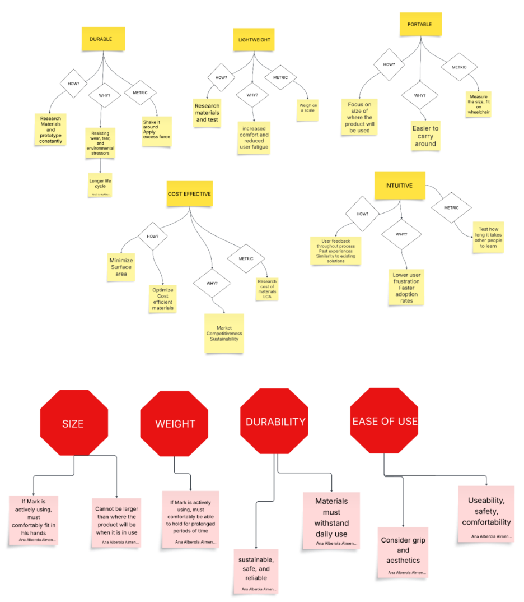
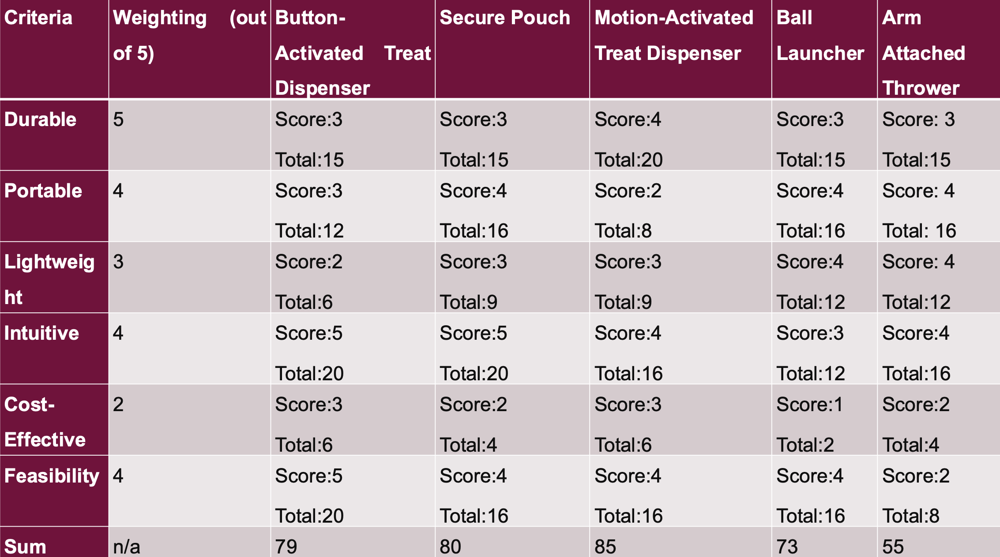

Project Narrative
Final prototype overview
Our team is building a motion-activated treat dispenser for a client named Mark, with the goal of reducing strain from grip-based tasks and helping him play with his dog more independently.
The current prototype uses an Archimedes screw mechanism to dispense treats in small amounts. An ultrasonic sensor detects a hand within about 15 cm, then an Arduino Uno triggers a 12V DC motor (through a motor controller) to rotate the screw. A compound gear train is used to increase torque for more consistent dispensing.
Based on early testing, the prototype can dispense roughly 3–4 treats per trigger and is designed to be lightweight and portable (current form factor is approximately 31 x 14 x 12 cm).
Design Focus
Reliable, low-effort activation and consistent treat output, with a form factor that fits comfortably on a wheelchair.
Objectives and Outcome
What We Aimed For
Create an intuitive, portable, lightweight, and durable prototype that allows treat dispensing with minimal hand strain and no button pressing.
Measured Results
Weight: 386 g (target < 1 kg), Dimensions: 31 x 14 x 12 cm, Output: about 3-4 treats per trigger, Intuitiveness test average: 8.6/10.
How We Validated
Team testing included trigger reliability checks, portability checks, peer usability trials, and physical stress simulation (including transport/bike-style bump testing).
My Contributions
- Background research and client context: Helped frame client needs around dexterity, mobility, and accessible interaction.
- Design integration: Contributed to linking sensing, control logic, and mechanical output into one workflow.
- Testing and iteration decisions: Used test observations to support threshold and reliability improvements in the trigger behavior.
- Documentation and communication: Contributed to report/presentation content and translation of technical results into clear design rationale.
Project 3 Reflection
Three-stage model: What? So What? Now What?
Name: Shayan Siddiqui • MacID: Siddm47
"Early testing turned our design assumptions into evidence we could trust."
🔎 What?
During Project 3 in our design studio, my biggest “wait, we need to rethink this” moment happened when we first tested our Arduino prototype using an ultrasonic sensor and a DC motor, and it kept triggering at the wrong time. I expected one clear distance reading and one motor activation, but during testing the distance values jumped around, so the motor would start, stop, or activate twice even when nothing changed. We were testing feasibility, basically whether the idea could work reliably in real use, and this test showed our first logic was not reliable. The turning point was watching the serial monitor flicker and hearing the motor buzz on and off, because it made it obvious that noise was causing false triggers. We decided we needed a better trigger threshold and an “armed” reset rule so the system would only trigger once and then wait until the hand moved away. After changing the code to trigger when the distance crosses a set point and lock until it crosses a reset point, the behavior became predictable instead of random. This challenged my assumption that a design that works “on paper” will behave the same in real life, and it pushed us to rely on test evidence instead of guessing.
🧠 So What?
This incident taught me that early testing matters because it exposes real problems before you invest more time building the full system. I had a misconception that “correct code” automatically means reliable behavior, but real sensor data is messy and design decisions have to account for noise and timing. It also improved my decision-making because we stopped choosing fixes based on what sounded right and started choosing fixes based on what we observed and measured. The outcome of testing early was that we caught the reliability issue when it was still quick to fix, and we avoided building the rest of the design on top of a weak trigger system. If we waited to test until later, the same problem would have shown up under deadline pressure and the redesign would have taken longer.
🚀 Now What?
I learned that testing needs to be planned early, not saved for the end, because real-world data will always reveal failure points that sketches and ideal code will not. This matters to me as an engineer because reliability affects safety, performance, and user trust, so my decisions need to be evidence-based. Next time, I will test a simple version early, run repeated trials (for example 10 tests per condition), and write clear pass criteria like “one trigger per approach and zero false triggers” before I lock in thresholds or mechanisms.
Media & Gallery
Final prototype photos and demo media
Concept Development
Prototype Photos
CAD and Drawing Gallery
Schematic
Final Prototype Demo Video
Final prototype demonstration
Design Process
How the design evolved from concept to final prototype
Objective Tree
We translated client needs into measurable goals: intuitive use, portability, low weight, durability, consistency, and cost-effectiveness.

Decision Matrix
We compared five concepts against weighted criteria (durability, portability, lightweight, intuitiveness, cost, feasibility). The motion-activated dispenser ranked highest overall.

Iteration Strategy
Each test cycle drove targeted changes to torque delivery, anti-jam behavior, and trigger reliability before final integration.
Problem Framing
Defined the client-centered goal: support interaction with a dog while reducing hand strain and improving independence.
Concept Selection
Used decision-matrix comparison across concepts (button dispenser, secure pouch, motion-activated dispenser, launcher, and arm-attached thrower). Motion-activated dispensing was selected as the best balance of usability and feasibility.
Build and Integration
Built and integrated the Archimedes screw mechanism, gear train, Arduino control logic, ultrasonic trigger, and motor driver.
Testing and Iteration
Iterated based on torque, jamming, and reliability observations; improved structural robustness and trigger consistency.
Prototype Iterations
Design Evidence
- Size: kept within wheelchair-side constraints (target length under 40.6 cm).
- Weight: 386 g total (target under 1 kg).
- Output consistency: approximately 3-4 treats per trigger.
- Intuitiveness: peer trial average of 8.6/10.
- Durability: stress-tested under transport/bump conditions.
Five candidate concepts were compared using weighted criteria. The motion-activated dispenser scored highest overall and was selected because it best balanced accessibility, portability, and feasibility.
- Introduced compound gearing to improve available torque.
- Adjusted dispensing burst behavior in control code for better consistency.
- Refined structure and pathway geometry to reduce jamming.
- Improved assembly robustness based on physical stress test feedback.
Final report and presentation links are available at the top of the Project Narrative tab.
Skills Developed
Technical and professional skills strengthened through Project 3
Technical Skills
Integrated ultrasonic sensing, trigger logic, and motor actuation for repeatable prototype behavior.
Applied iterative changes to torque transfer and output consistency using compound gearing and mechanism adjustments.
Evaluated size, weight, output consistency, portability, and usability against explicit design constraints.
Professional Skills
Mapped design decisions directly to client dexterity, comfort, and independence requirements.
Contributed to concept selection, iteration trade-offs, and presentation/report alignment across the team.
Translated design intent, testing outcomes, and prototype decisions into clear portfolio/report language.